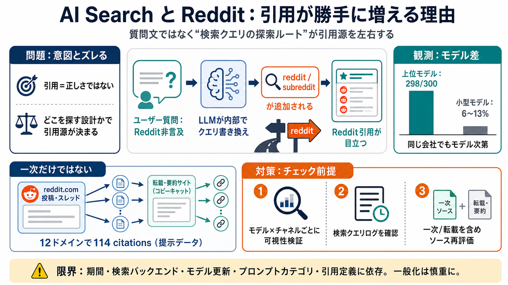

ChatGPT Cites Reddit in 298 of 300 Unnamed Answers
GPT-4.1, 5.5 and 5.6 rewrite questions into Reddit searches, cite the sites that scrape Reddit: 114 citations across 12 …

GPT-4.1, 5.5 and 5.6 rewrite questions into Reddit searches, cite the sites that scrape Reddit: 114 citations across 12 …
A friend of mine was under the impression that it would do a search for a number of possible matches and return the best…
the web just got shallower for AI(let's be real when was the last time you looked at the 11th result of google search fo…
# Struggling to find the perfect Search/Scraping API : r/LocalLLM. [Skip to main content](https://www.reddit.com/r/Local…
Track how ChatGPT, Perplexity, Gemini & Grok cite your brand, daily. Each report digs into a single question: top-cited …